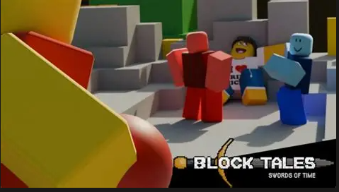

Unlike many other RPGs Block Tales does not increase the xp needed for each level bu rather just makes you gain less per encounter. When you start out you have 10 HP, 5 SP and 3 BP with each level you will choose between gaining stats in HP, SP, or BP. With each level you can gain 5 in HP or SP(Hp maxes at 100, Sp maxing at 100{both are without the use of cards}) or 3 in BP(Bp maxes out at 30). In the starting zone(Bizville) there is a library you can respec your stats at the cost of tix(the games coin equivalent). SP and HP can be artificially incresed even past the limit with HP+ and SP+ cards increasing them by 5
Each card costs a certain amount of BP ranging from 0-4 (0 cards usually do not affect gameplay unless it's negative) . Cards can be obtained in a variety of ways such as being bought in card shops. You are outright given two cards when you start the game those being hard mode, a card which just makes the game a lot harder and trainging wheels a card that gives a visual and audio cue for dodging. The rest of the cards can be found by exploring, talking to npcs, and progressing through the story. Some other cards cost 0 such as the power stab ability for the stab as a introduction to SP. Call Cards are cards taht call allies to your aid usually obtained by completing certain challenges or progressing through the story, currently there are 6.
Special Items are items you obtian throughout the story that are usually usable in battle but can be used outside of it too. they are listed in order of obtainment below:
The Swords Of TimeTM are the macguffins of Block Tales with the player's overarching goal being to acquire all 7. they are all listed below: